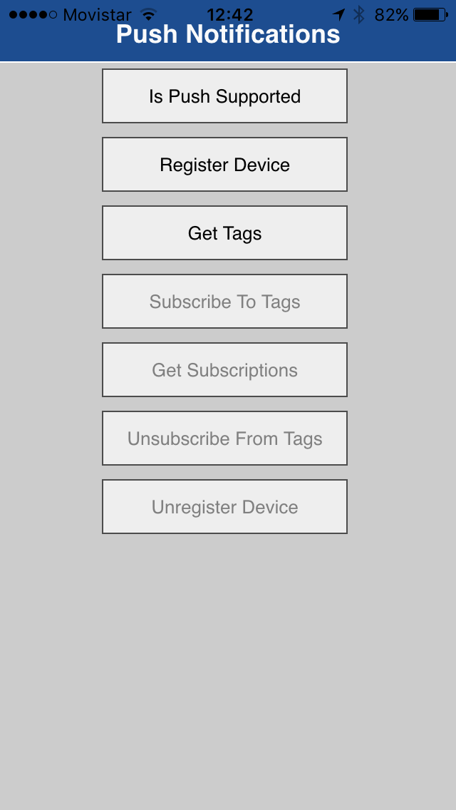

El objetivo del reto es conseguir a través de una serie de instrucciones un conjunto de pistas para rescatar a nuestro robot BB-8, que fue secuestrado por un malévolo individuo desconocido, y por supuesto, de paso conocer algunos de los más de 160 servicios que IBM Bluemix® tiene para hacer tus apps más fregonas.
A través de las diferentes pistas que irás recibiendo, podrás descubrir un trozo de información referente a este lamentable incidente y así podrás, presumir en tus redes sociales a través del #DCNight que son héroes y también hacerte acreedor a un premio.
Para asegurar que no tengas problemas con el internet lo primero que tienes que hacer es acceder a la siguiente red que está asignada exclusivamente para el reto.
ID: Developers Conect
Password: DevelopersConect16
Y para poder mantener la comunicación con el centro de control de la policía antisecuestros de androides, es necesario que instales en tu dispositivo de comunicaciones el siguiente código decodificador de mensajes de la policía antisecuestros de androides, el cuál podrás encontrar en esta liga: Aplicación para Android. Nota: Solamente es necesario que UN solo dispositivo móvil por equipo instale la aplicación y registre equipo, de lo contrario, no será posible llevar el control de los pasos que vayan descubriendo como equipo. Nota: Si no hay alguien en el equipo que tenga Android, avisa al equipo de IBM para que te ayuden con la versión para iOS.
Una vez que tengas instalada la app "PushNotificationsCordova", la primera pantalla que verás en la app móvil será:

Selecciona el botón "Register Device" y te presentará una alerta de error, esto significa que tu dispositivo se comunicado con el servidor de notificaciones pero no ha sido encontrado:
Selecciona "OK" en la ventana de alerta e introduce el nombre de tu equipo, como se aprecia en la siguiente iamgen:
Una vez que has introducido tu nombre de equipo, selecciona el botón de "Login", para regresar a la pantalla principal de la aplicación. A continuación, selecciona de nuevo el botón "Register device", y unos momentos después una alerta de confirmación del registro del dispositivo se mostrará en tu pantalla:
Recordatorio: Solo es necesaria una instalación y configuración de la aplicación móvil por equipo.
La app en https://devconnect2016.mybluemix.net/ será el punto principal de contacto, a partir de ella recibirás las instrucciones de cada uno de los pasos del reto y podrás validar tus hallazgos.
Como primer paso, deben registrar su dispositivo estelar (o celular) de comunicaciones con la central de mensajes, las instrucciones las encontrarás en ésta página: Liga de registro
Una vez que hayas registrado tu dispositivo, podrás iniciar con tu primer paso, da click para Continuar